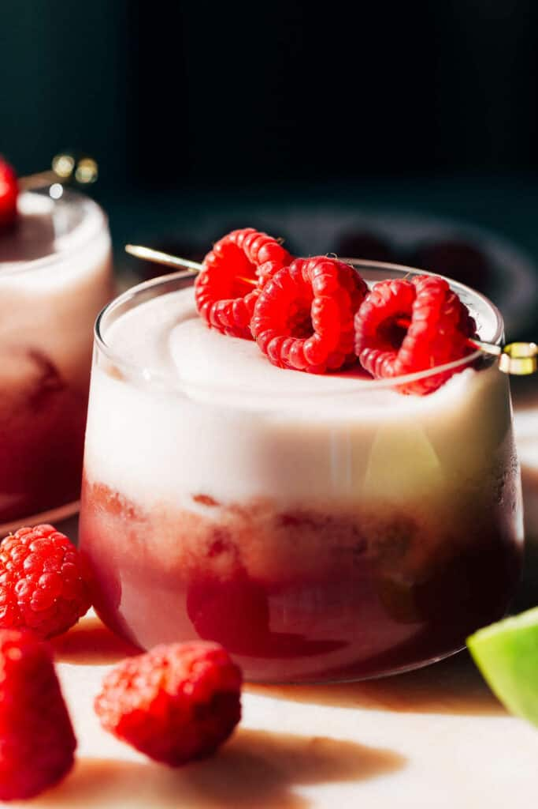

Frisky Whiskey

Description
A cocktail for a hygge evening in or a bar night out at your local favourite.
Ingredients:
- Makers Mark Whiskey: 4cl
- Fresh lime juice: 2-3cl
- Vanilla sugar: 1ts: can be also 1 cl of vanilla syrup
- Rasberry syrup: 2cl
- Foamer or an egg white:
- Ice: plenty for shaking and enjoying
- Shaker: Boston or Manhattan
Steps:
- Mix the ingredients into the shaker.
- Add ice and shake.
- Taste and polish.
- Pour into a glass filled with ice.
- Enjoy.